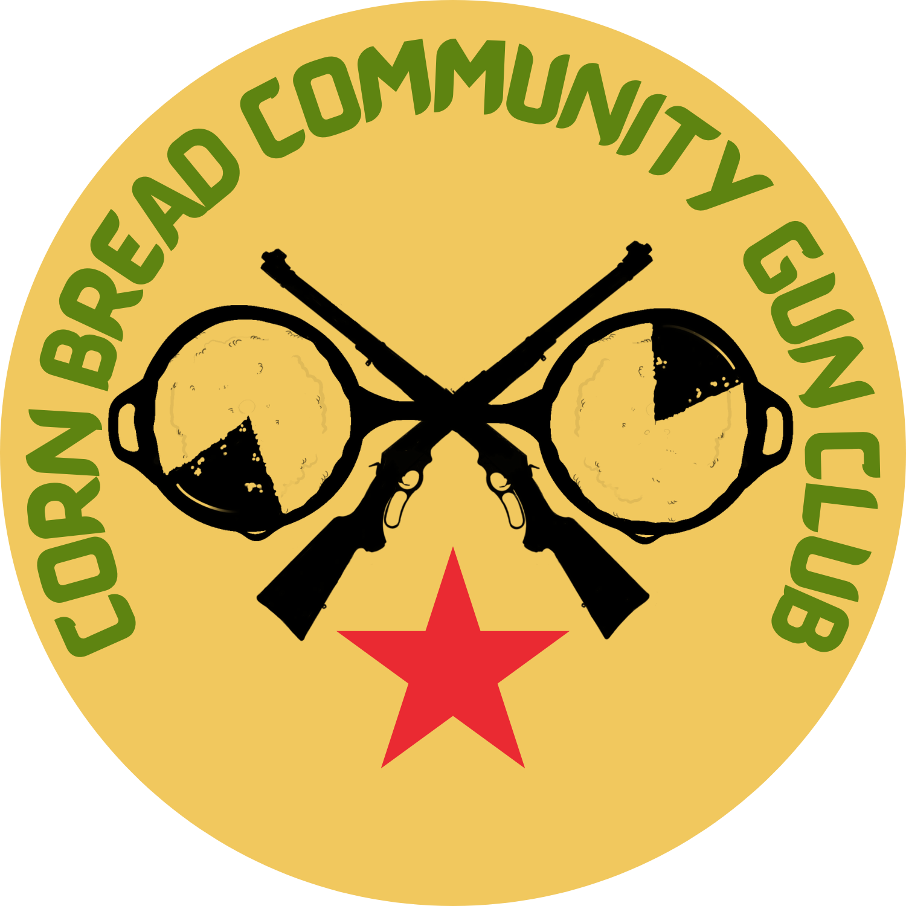
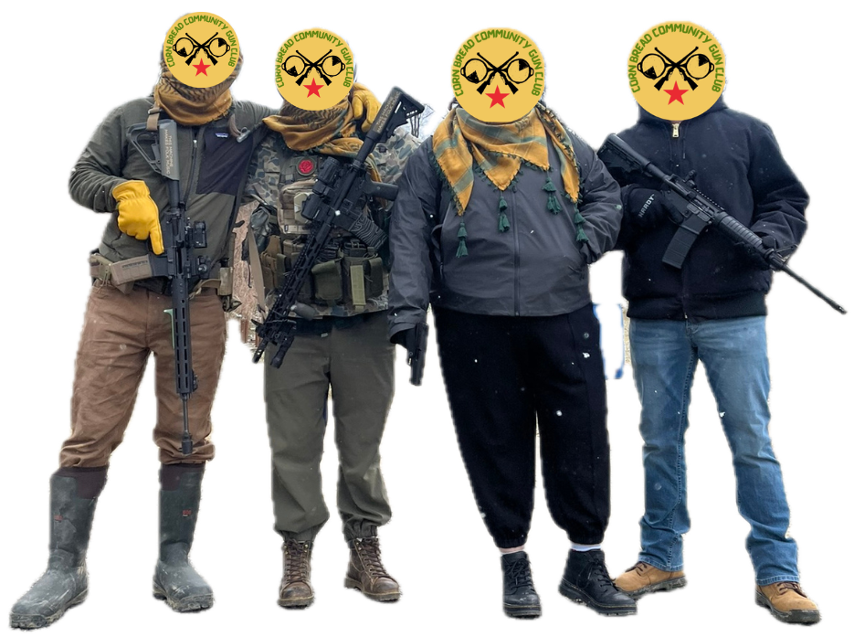

Cornbread Community Gun Club is a community focused, pan-leftist, group of firearms enthusiasts and educators based in central KY. We work to teach our community, especially the most marginalized among us, to be safe, responsible, and effective firearms owners.
We offer community firearms training for folks interested in self & community defense and from time to time we may offer additional training in topics such as de-escalation, stop the bleed, and other emergency preparedness skills
Reach us on Instagram
@cornbreadgunclub
or email
hello(at)cornbreadgun(dot)club
